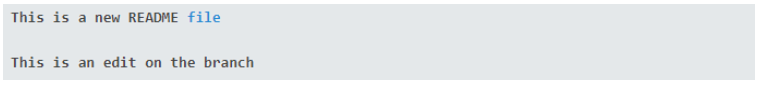
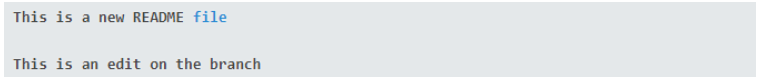

WHY DOES A MERGE CONFLICT HAPPEN?
In a project, there will have many participating members, contribute together and use the same repository. Conflicts will happen when the code in that repository is different from the code in the local repository. To avoid conflicts, before starting to write a new piece of code in the local repository, developers need to get the code from the github repository through the pull command to synchronize the code of the local repository with the code of the github repository.
For example of merge conflict (Brian, 2020):
- Create a new branch which named “branch_to_create_merge_conflict”
- On the new branch, create a branch “master” but still work on “branch_to_create_merge_conflict”.
- Make an edit for “README” file: 
- Then add the file "README" to the "master" confusing the git add command that is "Edits made to README on the branch".
- Return to “master” branch
- Edit a new “README” file on “master” branch with new content
- Add the “README” file to the “master” branch and commit it.

HOW TO RESOLVE CONFLICTS?
In detail, there are steps 6 to solve the conflict:
- Step 1: To check if the code has conflict or not, use the git branch to move the "branch_to_create_merge_conflict" to the "master" branch. And use the git merge command.
- Step 2: When a conflict occurs, the developer must make a suitable choice, either choose one of the two branches to merge, or merge both branches to fix.
- Step 3: In this case the developer chooses to delete “This is an edit on the master branch” to keep the content of “branch_to_create_merge_conflict” branch. 
- Step 4: Once edited, the developer will check to see the status by git status to see it was merged or not.
- Step 5: We will see the "README" file has not been added yet, we use the command git add and check the status again.
- Step 6: After the conflict has been fixed, the developer will use the git commit command to complete.
You will see that the content in "branch_to_create_merge_conflict" is different from the content in the "master" branch.